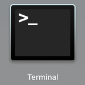
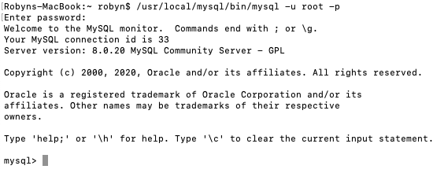
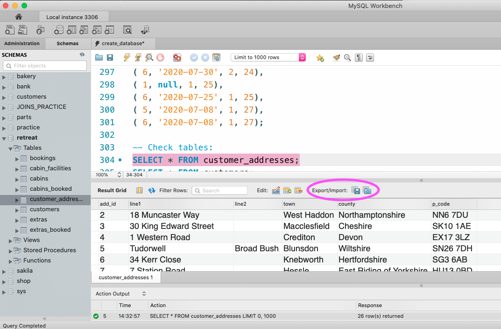

Topics covered:
Backing up a database is done from the command line (also known as the shell). Before learning how to back up a database, it is a good idea to become familiar with using this. As a note for myself, it is worth mentioning that the Learning SQL book (Beaulieu, 2020) that I am reading alongside the course contains MySQL examples that are all run from the command line rather than from the workbench.
All of this information here is relevant for a Mac. The command line is accessed by the Terminal application:
To run MySQL in the terminal, you need to get the terminal to run this file:
/usr/local/mysql-8.0.20-macos10.15-x86_64/bin/mysql
The path shown above is just where it is on my computer, it might be different for someone else. It is also worth noting that an alias has been placed in the local folder so that you can just use the following path which removes that awkwardly named folder in the middle:
/usr/local/mysql/bin/mysql
Because you have a user name and password to access the server, just running that path from the command line won't work as it will be trying to access a file that is protected. You need to add a bit more on to the end of the path as shown here:
/usr/local/mysql/bin/mysql -u root -p
The username here is root but you would just put whatever your username is in here. When you press enter and run this code, the command line will request your password. When I type mine in it doesn't look like it's doing anything at all. But typing the password then pressing enter does the job. This is what the terminal window should look like once this has all been done correctly:
 prompt, which indicates MySQL is ready to work.">Once the above is complete, MySQL will be running in the command line and you can type queries out just as you would in the workbench. As you only have the command line and no nice user interface, there are a few statements that are particularly useful.
| Statement | Description |
|---|---|
SHOW DATABASES; |
Lists all the databases on the server. |
SHOW FULL TABLES; |
Shows a list of the tables present in the current database (after you
have told it which database to use with USE database_name;).
|
DESC table_name; |
Shows a list of the columns in the table. |
SELECT database(); |
This tells you which database is currently in use. |
Once you are done with using MySQL, you can tell it close by typing
exit. The next line that comes up will be the normal command line,
rather than a mysql> prompt.
The bin folder contains lots of other files related to MySQL that you might
want to use at some point during your session, including the file that is
used to create a backup in the following section. It might be easier to
change the current working directory in the command line to that folder when
you first start in the command line so that you aren't having to type out
long paths. To do this, use the following code where cd just
means change directory. You would then use the second line of code
shown below to run MySQL, after which it will ask you for your password. For
some reason that I did look into but don't want to bother myself with at the
moment, you must include the ./ at the start of the second line
to indicate that the file is in the current directory. Leaving it out just
doesn't work.
cd /usr/local/mysql/bin
./mysql -u root -p
usr is a hidden folder so it might not be easy to find straight
away. To quickly toggle show/hide hidden files/folders in file explorer
(should you be wanting to check this is where your MySQL files actually are)
press SHIFT + CMD + . at the same time.
Now that we know how to use the command line, we can easily create a backup.
All we do is run the mysqldump file from the command line and
provide it with a bit of extra information. This can be done with the code
shown below.
/usr/local/mysql/bin/mysqldump -u root -p database_name >/usr/local/mysql/
backups/database_nameBackup
The first part of this is the path to the mysqldump file. If
you have changed the working directory then you would just provide the
appropriate path to the mysqldump file from your current
directory. You then provide the username and password (in this case you are
asked for the password after you have run this line of code). You then need
to tell it which database you are wanting to back up. The final part of this
code is a path to the directory where you want to save the backup. I had
created a folder in the mysql folder called backups so that I have one place
to keep them all together but you could save it anywhere.
It is good to test your backup by restoring it on a test server or another
machine. The restore is done from the original mysql file we
used in section 1.1 above. I didn't want to mess around with creating a test
server as I don't know how to do this. So I changed the bakery database that
we have been using in class by adding in a couple of new entries into the
savoury table and then tried to restore it to the backup I made before the
changes in order to check that the backup and restore had worked. Happily
it did work! The code I used is shown below:
cd /usr/local/mysql/bin
./mysql -u root -p bakery <../backups/bakeryBackup
It would also work with the following if you haven't changed the current directory:
/usr/local/mysql/bin/mysql -u root -p bakery </usr/local/mysql/backups/
bakeryBackup
We didn't cover reading data into SQL (e.g. from a csv file) in this week's lesson. It does, however, mention we should be doing this on one of the slides. So I have looked up some resources online to find out how to do this. There seems to be a way to do it with some code from the command line or a more user-friendly way with the MySQL workbench.
I had a go at this during my course project. I obtained some customer details data from an online data generator and wanted to import this data into my database from csv files. In order to do this you need to make sure that you have created a table with the same columns as the csv. I tried to import addresses into my customer_addresses using the following code:
LOAD DATA INFILE '/usr/local/mysql/im-ex-files/addresses.csv'
INTO TABLE customer_addresses
FIELDS TERMINATED BY ','
ENCLOSED BY '"'
LINES TERMINATED BY '\n'
IGNORE 1 ROWS;
However, I kept getting the following error:
Error Code: 1290. The MySQL server is running with the --secure-file-priv
option so it cannot execute this statement
I looked into this and it seems to be in place for database security. You
can only import data into the database from a specified directory that would
have been set up when you install MySQL. However, when I check where this
directory is (using SHOW VARIABLES LIKE "secure_file_priv";)
there doesn't seem to be one set up. I did look into how I could set this up
but it became too time consuming so I gave up on this for now and decided to
just use the workbench import wizard for my project this time.
In the workbench, if you right click on the table you want to populate with data, you will see an option to open the Table data import wizard . You can just follow the steps through this to import the data easily. You will need to make sure you select the right options such as the delimiter that matched the one in your csv file.
After the fiasco of trying to import data using code, I didn't bother trying to export using code. You can export a table or view easily in the workbench as a csv file from the section of the workbench circled in pink on the image below.
